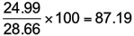

Simple price index
A simple price index measures the price of a single item or commodity as a percentage of the price of the same item at a fixed time, normally in the past. The fixed time is called the base period and may be chosen for convenience (e.g. January 1st for daily data, or 2010 for annual data) or because its value is “moderate”, i.e. neither unusually high nor unusually low.
Assuming the time period is years, then if P0 denotes the price in the base year and Pi denotes the price in year i, then the index number for year i is given by

The simple price index is just the current price expressed as a percentage of the base year price. However some index numbers use a factor of 1000 rather than 100, especially if it is desired to express the index as a whole number.
Spot price of European Brent Oil
The table below shows the spot price of European Brent Oil (in US dollars per barrel) from 2000 to 2009.
| European Brent Oil Spot Prices 2000 - 2009 | |||||||||
|---|---|---|---|---|---|---|---|---|---|
| 2000 | 2001 | 2002 | 2003 | 2004 | 2005 | 2006 | 2007 | 2008 | 2009 |
| 28.66 | 24.46 | 24.99 | 28.85 | 38.26 | 54.57 | 65.16 | 72.44 | 96.94 | 61.74 |
Using 2000 as the base year, the price index for year 2001 equals

Similarly the price index for year 2002 equals

The full series is shown below.
| European Brent Oil Spot Price Index 2000 - 2009 | |||||||||
|---|---|---|---|---|---|---|---|---|---|
| 2000 | 2001 | 2002 | 2003 | 2004 | 2005 | 2006 | 2007 | 2008 | 2009 |
| 100 | 85.35 | 87.19 | 100.66 | 133.50 | 190.40 | 227.36 | 252.76 | 338.24 | 215.42 |
The index allows us to measure changes as a percentage of the base year. In 2001 the price was about 15% lower than in 2000 (85.35 − 100 = -14.65) but by 2009 it was 115% higher (215.42 − 100 = 115.42). Note that:
The time series chart below shows how the oil price changed during the decade. The index numbers simply rescale the values so both the prices and index numbers can be displayed on the same chart with dual axes.
Changing the base year
In practice the base year is revised from time to time so that comparisons can be made with a recent (i.e. not ancient) price value. For example the quarterly New Zealand Consumers Price Index has a current base of June 2006. Converting an existing index to a new base is quite straightforward:

Here “new” refers to the index using the new base, “existing” refers to the index using the existing base, and “newbase” refers to the index for the new base year using the existing base year.
Spot price of European Brent Oil
To convert the 2009 index to a 2005 base,

Therefore the 2009 price was only 13.1% higher than in 2005.